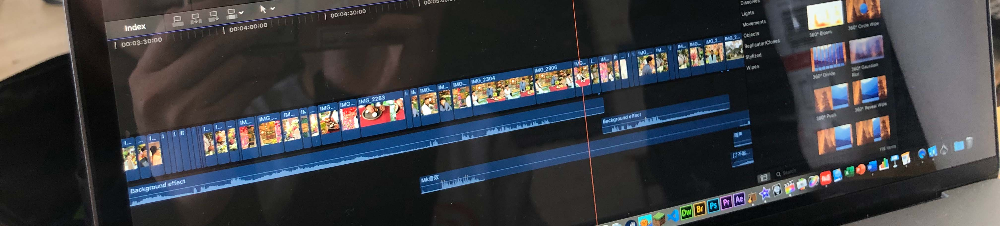
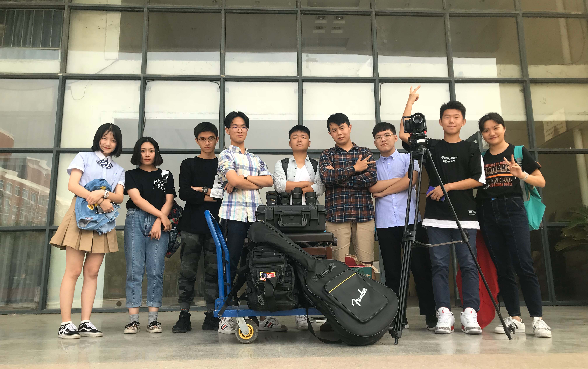
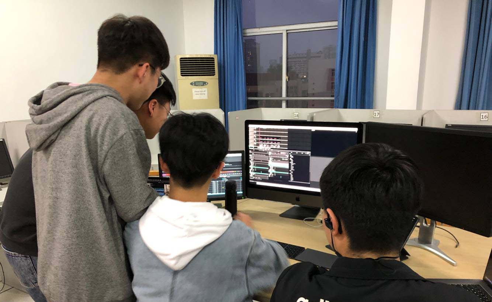

Experiences - Video Editor
In the photography club, not only photography activities are conducted, but also video recording. And we completed several groups of microfilm shooting and post-production during high school.
"The foundation of film art is editing."
- Vsevolod Pudovkin

Video Editing

Film Teams in High School
